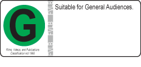
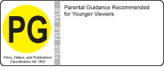
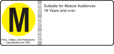
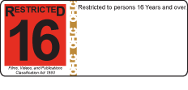
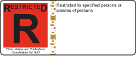

Films, Videos, and Publications Classification Act 1993
Rating labels for unrestricted films,videos, DVDs and games


- Items with green or yellow labels are unrestricted and can legally be made available to anyone.

- M rated items are considered to be more suitable for people over the age of 16,but this is a recommendation, not a legal restriction.
Classification labels for restricted films, videos, DVDs and games

- Items with red labels are restricted. They can only be supplied legally to people who are at least the age on the label. The most common restrictions are R13, R16 and R18.

- The red R label needs to be read carefully as this label can have different restrictions on it.
The Film and Video Labelling Body rates unrestricted publications and administers the labelling system.
The Office of Film and Literature Classification classifies films that are likely to be restricted and receives complaints and inquiries about censorship in New Zealand.
Office of Film and Literature Classification Correct at 22 November 2011